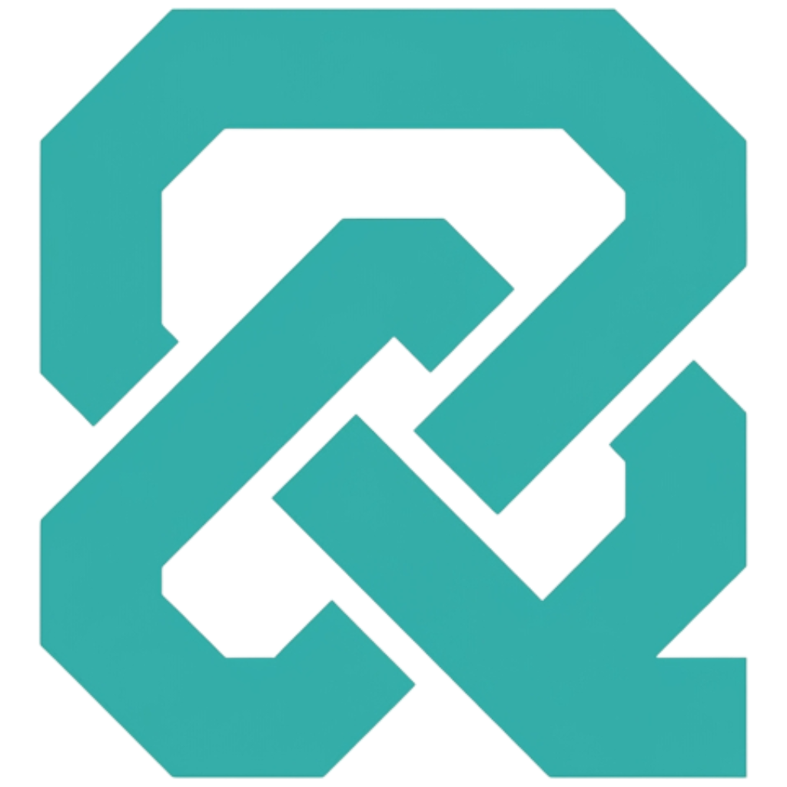

◆Infrastructure as Data
Your Database.
Your Infrastructure.
Lynq turns database records into Kubernetes resources. Automatically.

Lynq turns database records into Kubernetes resources. Automatically.